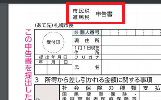
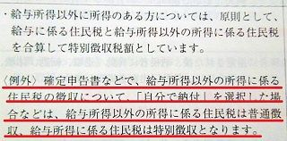
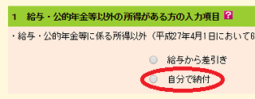

ホームページで広告収入のススメ
作成したホームページに企業の広告を掲載してネット収入を得ましょう。
ホームページやブログに広告を掲載する方法としては、「アフィリエイト広告」を利用するのが一般的です。
【大手のアフィリエイトサービス会社】
■A8.net
ファンコミュニケーションズ（東証1部上場：2461）
国内最大規模のため、初めてアフィリエイトをする方でも安心です。
■バリューコマース （東証1部上場：2491）
サイトの審査がありますが、優良な広告主が多く安心して利用することができます。
■アクセストレード インタースペース（マザーズ上場：2122）
報酬の受け取りは1,000円からで振込み手数料も無料。サイトの審査あり。
■グーグルアドセンス （Nasdaq：GOOGL, GOOG）
こちらは成果報酬ではなく、クリックタイプの報酬です。ホームページだけでなく、YouTubeで広告収入を得る際もアドセンスになります。審査あり。
■Performance First オプトホールディング（東証1部上場：2389）
金融ジャンルを運営されている方は株式会社オプトの「Performance First」がおすすめです。
※当サイト運営者もかれこれ10年以上利用しております。
近年、新聞やテレビの広告費は年々減少傾向にありますが、インターネット広告費は増加傾向にあり、2009年にはすでに新聞広告費を上回っています。2018年の現在、このネット広告費の総額は年間１兆５千億円程度ですが、ニュースメディアを媒体とした広告に加え、個人のホームページ上に掲載される広告も増加傾向にあります。
また、国内「B-to-C」のEC市場規模も年々増加傾向にあり、2015年には14.5兆円規模にまで拡大してきました。
ネット通販の市場規模が拡大するのに伴い、商品を販売するための広告費も増加することが予想されているため、今からはじめても遅くはありません。上記のアフィリエイトサービス会社に登録してホームページ上に広告を掲載し、ネット収入をコツコツ増やしていくことをオススメします。
ただし、サイト運営側の立場は、検索エンジンで上位に表示されていない限りかなり弱いです。提携を拒否されたり、一方的に提携を解除されたり、広告単価を引き下げられたりは日常茶飯事といえます。
けれども、アクセス数が多くなってくると特別単価や純広告での掲載依頼がやってくるようになりますので、コツコツとサイト運営していくことをオススメします。また、ホームページ上には連絡先のメールアドレスを記載しておくとよいでしょう。
広告収入での副業が会社にばれてしまうケース
副業禁止の会社に勤めているサラリーマンの場合、ホームページ上での広告収入も副業とみなされ、会社側から解雇されてしまう可能性があります。
サイトの広告収入の所得区分は「雑所得」にあたりますが、金額が大きくなってくると確定申告をする必要が出てくるため、あらかじめ確認してから始めるとよいでしょう。
■所得税について
給与所得者のサラリーマンの場合、アフィリエイト報酬分からサーバー代などの経費を差し引いた「所得」の合計額が年間20万円を超える場合は確定申告をする必要があります。
No.1900 給与所得者で確定申告が必要な人
「1か所から給与の支払を受けている人で、給与所得及び退職所得以外の所得の金額の合計額が20万円を超える人」（国税庁ホームページより）
逆にいえば、20万円以下の場合は確定申告をする必要はありませんが、仮に20万円を超えて申告する場合でも、追加分の所得税を自分で納付してしまえば会社側で判明する可能性は低いです。
■住民税について
ただし、住民税については金額の多少に関わらず申告する必要があり、後で会社の給与から住民税が天引きされるため、これが元で会社側にばれてしまう可能性があります。
所得税も住民税も給与からの天引きではありますが、住民税については会社の給与所得だけではなく、雑所得なども含めた確定申告後の所得を元に天引きされるため、副収入が会社にばれるかどうかについては住民税がポイントになります。
～ 住民税の申告方法 ～
・雑所得20万円を超えて所得税を確定申告した人
→ 所得税の確定申告の金額を元に自動で請求されるため、住民税の申告は不要（後ほど会社の給与から天引き）
・20万円以下で所得税の確定申告をする必要がない人
→ 自分で雑所得分の住民税の申告が必要（こちらも後から会社の給与で天引き）

会社側からすると、支払っている給与レベルに合わない住民税の天引き要請がくると、他に所得があるのだなとわかってしまうものです。
例えば、会社側が給与を400万円払っていたとして、この場合の課税所得が200万円の場合、住民税は一律10%なので約20万円の計算になります。けれども、5月頃、自治体から総額で30万円の代理徴収（特別徴収）の通知書が来た場合、逆算すると課税所得が300万円という計算になってしまい、給与以外で100万円分の所得を確定申告したことがわかってしまいます。
この特別徴収額の決定・変更通知書は、会社側から本人への控えも交付されているはずなので、住民税の項目を確認してみるとよいでしょう。
住民税を自分で納付すれば、会社に副業がばれない？
この住民税の請求で給与との帳尻が合わなくなるのを回避する方法として、住民税を自分で納付してしまう方法があります。サイト収入分の所得税を確定申告した際、申告書の「○住民税に関する事項」で「自分で納付」を選択した場合は住民税の天引きを回避できる可能性があります。

e-Taxでいうと、以下の住民税に関する項目がそれにあたります。

上記の例でいえば、「自分で納付」を選択した場合、会社からの天引き分で20万円、自分で納付する分10万円をそれぞれ別に納付する形になり、この場合はもしかすると会社側ではわからないかもしれません。
ただし、アルバイトなどの副業は「給与所得」になるため、これにはあてはまりません。あくまでアフィリエイトの「雑所得」の場合なら、もしかすると会社にばれないかも、ばれるかもということになります。
役所の方で手続き上の行き違いなどもありますので、会社にばれるリスクはもちろんありますが、副業がグレーゾーンの会社などでできるだけ知られたくない場合、上記のように「自分で納付」にて対応するとよいでしょう。
（※当サイト運営者は会社に内緒での副業を推奨しているわけではありません。）
ホームページ上の広告収入で会社の副業規程に抵触し、解雇されてしまう重大なリスクが全くないともいえませんので、この点はよくご確認されることをおすすめします。
■社会保険について
ちなみに、会社員の場合、健康保険や厚生年金については会社側の標準報酬月額で決まるため、アフィリエイトでの雑所得を申告しても関係ありません。そのため、天引きされる社会保険料が上がることもなく会社側にばれることもないです。
一方、自営業者が加入する国民健康保険料については、確定申告の所得によって請求されてきます。そのため、社会保険料も上がってしまう可能性があるので注意しましょう。